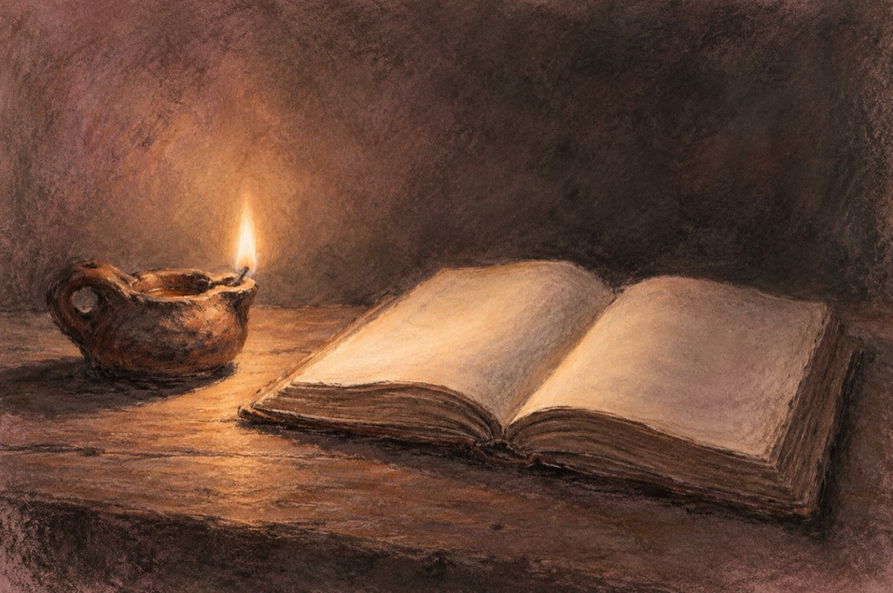

Noi
Noi am fost și încă mai suntem,
Generația-n care,
S-a călit oțelul, de aceea rezistăm.
Trăind și nu murind.
Încercare după încercare!
Am luminat slova cu opaițul
Și carte și viață am învățat
Pe tații noștri ni i-a luat războiul
Noi printre bombe am scăpat!
Cu cerul negru de-avioane
Lipsiți de toate și rupți de foame
Dar am scăpat păziți de Doamne Doamne!
Am luat taurul de coarne
Și l-am aruncat în haos.
Răului, din spini făcutu-i-am coarne,
Și l-am întors cu capu-n jos!
Am zis să aruncăm cămașă ruptă de pe noi
În plină secetă și un regim de ocupație
Dar am plecat în altă luptă oropsiți și goi
Această pedepsită fără vină, NAȚIE!
Cu transformări în atrocități ca-ntrun război!
Și am plecat la luptă cu mic, cu mare
Să reclădim cetatea răvășită, de-un nou regim și de războaie
Cu trudă, sacrificii, țara-am luminat
La toată-această transformare, cu tributul vieții dat!
Și într-o bună zi, în presupusa evoluție
S-a răsturnat clepsidra care ne marca
Și s-a pornit așa zisa revoluție
În care, într-un fir de păr, soarta noastră atârna
Da, am învins alte sacrificii, alt început!
La care noile generații
Și-au adus din plin,noul tribut!
Iar generația în care S-A CĂLIT OȚELUL,
Încet, încet, coboară-n bernă cu drapelul!
Vasile Groza